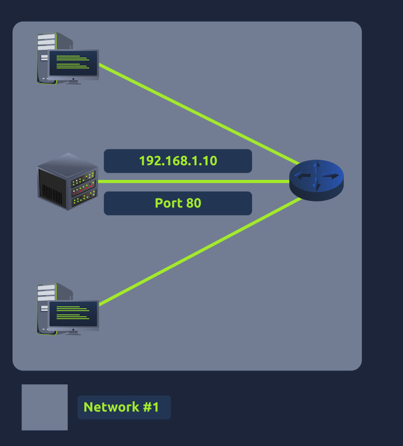
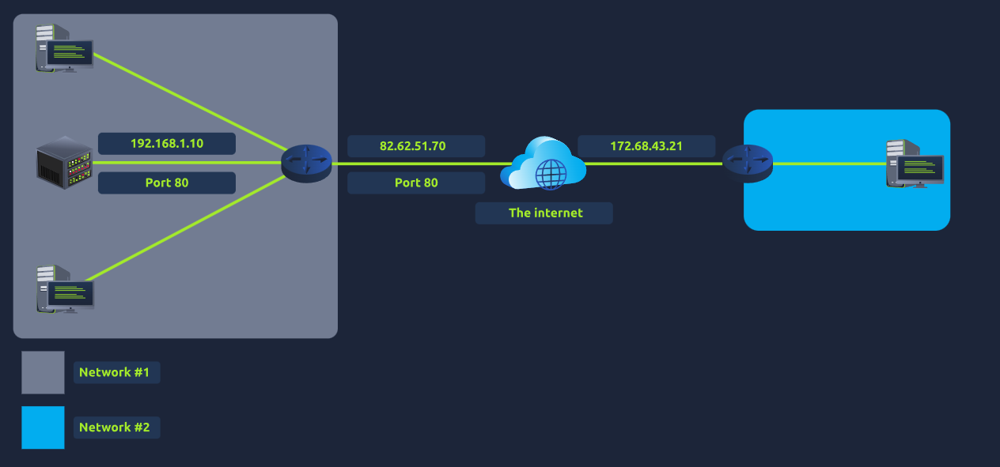
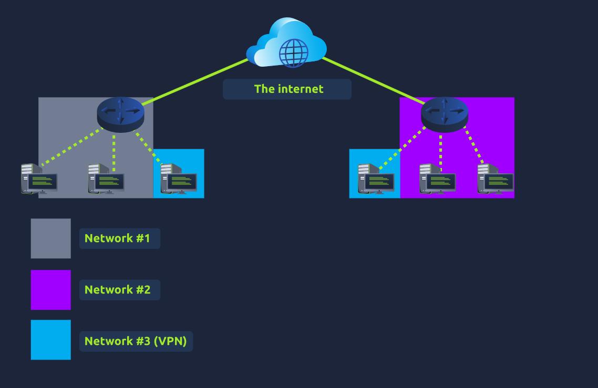
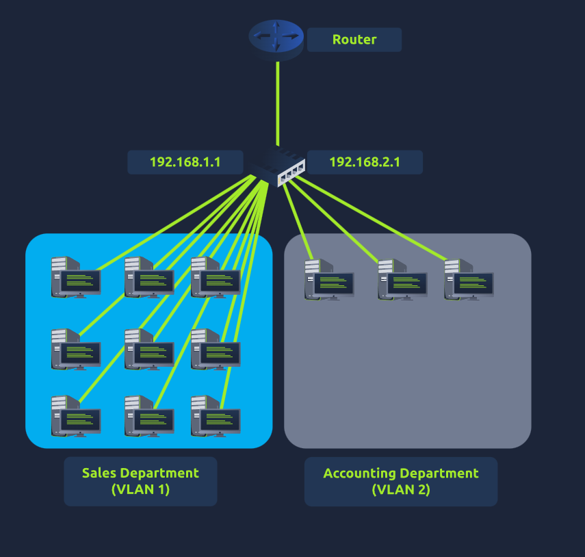

TryHackMe · Pre-Security Pathway
Pre-Security
7 Modules · 31 Rooms · 35 min read
View pathway on TryHackMe →MODULE 1
Offensive Security Intro
What is Offensive Security?
- "To outsmart a hacker, you need to think like one" — the core principle of offensive security.
- Involves breaking into computer systems, exploiting software bugs, and finding loopholes to gain authorised access.
- Goal is to understand hacker tactics to enhance system defences.
Offensive Security Roles
| Role | Responsibility |
|---|---|
| Penetration Tester | Tests technology products for exploitable security vulnerabilities. |
| Red Teamer | Plays the role of an adversary, attacking an organisation and providing feedback from an enemy's perspective. |
| Security Engineer | Designs, monitors, and maintains security controls, networks, and systems to help prevent cyberattacks. |
MODULE 1
Defensive Security Intro
What is Defensive Security?
- Concerned with two main tasks: preventing intrusions and detecting and responding to intrusions when they occur.
- Blue teams are the core of the defensive security landscape.
| Task | Description |
|---|---|
| User awareness | Training users about cybersecurity helps protect against attacks targeting human error. |
| Asset management | Documenting and managing systems and devices so everything needing protection is known. |
| Patching | Ensuring computers, servers, and network devices are correctly updated against known vulnerabilities. |
| Preventative devices | Firewalls control network traffic; IPS (Intrusion Prevention Systems) block malicious traffic. |
| Logging & monitoring | Essential for detecting malicious activity — e.g. new unauthorised devices on the network. |
Security Operations Center (SOC)
- Team of cybersecurity professionals that monitor a network and its systems to detect malicious events.
- Vulnerabilities: Weaknesses in systems — SOC tracks and ensures they are patched or mitigated.
- Policy violations: E.g. a user uploading confidential data to an unauthorised cloud service.
- Unauthorised activity: Detecting when stolen credentials are used to log in to the network.
- Network intrusions: Detecting intrusions as quickly as possible — can occur via malicious links or exploitation of public servers.
Threat Intelligence
- Intelligence = information gathered about actual and potential enemies. A threat is any action that can disrupt or affect a system.
- Purpose: achieve threat-informed defence. Different organisations face different adversaries.
- Data collection: Locally via network logs, or publicly via forums and threat feeds.
- Analysis: Identifies TTPs (Tactics, Techniques & Procedures) and produces actionable recommendations.
Digital Forensics & Incident Response (DFIR)
- File system: Forensic image reveals installed programs, created/deleted files.
- System memory: If malware runs only in memory, a forensic memory image is the best analysis method.
- System logs: Even if an attacker clears their traces, some log entries will remain.
- Network logs: Logs of network packets help establish whether an attack is occurring.
PHASE 1
Preparation
Team trained and ready. Preventative measures in place.
PHASE 2
Detection & Analysis
Resources to detect and analyse incidents.
PHASE 3
Containment, Eradication & Recovery
Stop spread, eliminate threat, restore systems.
PHASE 4
Post-Incident Activity
Report produced, lessons learned shared.
Malware Analysis
- Malware = malicious software.
- Virus: Attaches to a program and spreads by altering, overwriting, or deleting files.
- Ransomware: Encrypts user files. Attacker demands payment for the decryption key.
- Trojan horse: Appears legitimate but hides a malicious payload.
- Static analysis: Inspects the program without running it — requires assembly language knowledge.
- Dynamic analysis: Runs malware in a controlled environment and monitors its behaviour.
SIEM
- SIEM (Security Information and Event Management) — gathers security events from various sources and presents them in a centralised dashboard.
- Not all alerts are malicious — analyst uses expertise to determine which are harmful.
- SOC workflow: review alert → investigate IP → escalate to team lead → block IP address.
MODULE 1
Careers in Cyber
Cyber Security Roles
| Role | Focus |
|---|---|
| Security Analyst | Monitors and analyses security events; investigates incidents. |
| Security Engineer | Designs, builds, and maintains security systems and controls. |
| Incident Responder | Responds to active security incidents; contains and eradicates threats. |
| Digital Forensics Examiner | Investigates systems and digital evidence to establish what happened. |
| Malware Analyst | Analyses malicious software using static and dynamic techniques. |
| Penetration Tester | Legally attempts to breach systems to find exploitable vulnerabilities. |
| Red Teamer | Simulates real-world adversarial attacks to test defences and response capabilities. |
MODULE 2
What is Networking?
Networks and the Internet
- A network can be formed from 2 devices to billions — ranging from laptops to security cameras and traffic lights.
- The Internet is a network of networks. Small networks = private networks. Networks connecting them = public networks.
- First iteration was ARPANET in the late 1960s, funded by the US Department of Defense.
- The internet as we know it was invented in 1989 by Tim Berners-Lee — the World Wide Web.

Private networks joined together via the public internet
IP Addresses
- IP address = name. MAC address = fingerprint.
- Divided into four octets. Cannot be active more than once within the same network.
- Public IP: Identifies a device on the internet. Private IP: Identifies a device on a local network.
- IPv4 is exhausted. IPv6 supports 340 trillion+ addresses.
MAC Addresses
- 12-character hexadecimal number. First half: vendor-specific. Second half: unique to the device.
- Burnt into the NIC by the manufacturer. Can be spoofed.
Ping (ICMP)
- Uses ICMP packets to determine connection performance between devices.
- Syntax: ping <IP address or URL>

Ping syntax and example output
MODULE 2
Intro to LAN
LAN Topologies
| Topology | How it works | Advantages | Disadvantages |
|---|---|---|---|
| Star | Devices individually connected via a central switch/hub. Most common today. | Scalable; robust | Expensive; harder to maintain at scale; fails if central device fails |
| Bus | All devices stem from a single backbone cable. | Easy to implement; cost efficient | Prone to bottlenecks; single point of failure; little redundancy |
| Ring (Token) | Devices connected in a loop. Data travels in one direction. | Little cabling; easy to troubleshoot | Inefficient — data may pass many devices; cut cable breaks entire network |

Star topology — most common in modern networks
Switches & Routers
- Switch: Aggregates devices. Tracks which device is on which port — sends packets directly rather than broadcasting. Available in 4–64 port variants.
- Router: Connects networks. Operates at Layer 3 of OSI. Creates paths between networks for data delivery.
- Switches and routers can connect to each other for redundancy — if one path fails, another can be used.

Router selecting the optimal path between networks
Subnetting
- Splitting a network into smaller networks using a subnet mask (32-bit, four octets, 0–255).
- Benefits: efficiency, security, full control.
| Address Type | Purpose | Example |
|---|---|---|
| Network address | Identifies the start of the network. | 192.168.1.0 |
| Host address | Identifies a specific device on the subnet. | 192.168.1.100 |
| Default gateway | Device capable of sending data to another network. | 192.168.1.1 |

Subnetting — dividing a network into smaller segments
ARP
- Associates a MAC address with an IP address. Each device maintains an ARP cache.
- ARP Request: Broadcast — "Which device owns this IP?" ARP Reply: Device responds with its MAC address.

ARP request and reply process
DHCP
STEP 1
DHCP Discover
Device broadcasts to find a DHCP server.
STEP 2
DHCP Offer
Server offers an IP address.
STEP 3
DHCP Request
Device confirms it wants the offered IP.
STEP 4
DHCP Ack
Server confirms assignment is complete.

DHCP four-step process
MODULE 2
OSI Model
Overview
- Seven-layer framework dictating how devices send, receive, and interpret data. Key benefit: devices with different designs can still communicate.
- Each layer adds information to data as it passes down — this is called encapsulation.

The seven layers of the OSI model
The Seven Layers
Layer 7
Application
Data
Protocols and rules for user interaction with data. Browsers, email clients, DNS operate here.
Layer 6
Presentation
Data
Standardisation and translation. Encryption (e.g. HTTPS) occurs here.
Layer 5
Session
Data
Creates and maintains connections. Sessions are unique — data cannot travel across different sessions. Supports checkpoints.
Layer 4
Transport
Segments / Datagrams
TCP (reliable, error-checked) or UDP (fast, no guarantee). TCP for file sharing/email; UDP for streaming/ARP/DHCP.
Layer 3
Network
Packets
Routing and reassembly. Uses IP addresses. Routers operate here. Protocols: OSPF, RIP.
Layer 2
Data Link
Frames
Physical addressing. Adds MAC address of receiving endpoint. NIC operates here.
Layer 1
Physical
Bits
Physical hardware — electrical signals transferring data in binary (1s and 0s). Ethernet cables connect devices here.
TCP vs UDP
| Feature | TCP | UDP |
|---|---|---|
| Reliability | Guaranteed — error checking built in | No guarantee — data sent and hoped for |
| Connection | Reserves constant connection for duration | Stateless — no continuous connection |
| Speed | Slower | Faster |
| Use cases | File sharing, email, web browsing | Video streaming, ARP, DHCP, voice chat |
MODULE 2
Packets & Frames
Packets and Frames
- Packet: Layer 3 unit — contains IP header and payload. Used when discussing IP addresses.
- Frame: Layer 2 unit — encapsulates the packet and adds MAC address information. Like an envelope around a letter.
- Small pieces of data reduce bottlenecks compared to sending large messages — e.g. an image is sent in pieces and reassembled.
| IP Header | Purpose |
|---|---|
| TTL | Expiry timer — packet discarded if it never reaches destination. |
| Checksum | Integrity check — if data changed, value differs and packet is discarded. |
| Source address | IP of sending device — so data knows where to return. |
| Destination address | IP of receiving device — so data knows where to travel. |
TCP Three-Way Handshake
- TCP is connection-based — must establish connection before sending data. Guarantees data is received.
- TCP/IP model has 4 layers: Application, Transport, Internet, Network Interface.
STEP 1
SYN
Client initiates and synchronises sequence numbers.
STEP 2
SYN/ACK
Server acknowledges and sends its own ISN.
STEP 3
ACK
Client acknowledges server's ISN — connection established.
STEP 4
DATA
Data transmitted across the connection.
STEP 5
FIN
Cleanly closes the connection.
RST
Reset
Abruptly ends communication — indicates a problem.

TCP three-way handshake between two devices
UDP
- Stateless — no handshake, no synchronisation, no guaranteed delivery.
- Used where speed matters over accuracy: video streaming, voice chat, ARP, DHCP.
- Simpler packet structure — fewer headers than TCP.

UDP packet — simpler than TCP with fewer headers
Common Ports
| Protocol | Port | Purpose |
|---|---|---|
| FTP | 21 | File transfer — client-server model. |
| SSH | 22 | Secure remote login via text interface. |
| HTTP | 80 | World Wide Web. |
| HTTPS | 443 | Encrypted HTTP. |
| SMB | 445 | File and device sharing. |
| RDP | 3389 | Remote desktop access. |
MODULE 2
Extending Your Network
Port Forwarding
- Opens specific ports on a router so internet traffic can reach internal servers.
- Without it, servers are only accessible within the same network (intranet).
- Port forwarding opens ports; firewalls control whether traffic can pass through those ports.

Without port forwarding — server accessible to local network only

With port forwarding — server accessible from the internet
Firewalls
- Determines what traffic is allowed to enter or exit a network based on: source, destination, port, protocol.
- Performs packet inspection to apply rules.
| Type | How it works |
|---|---|
| Stateful | Uses the entire connection context to make dynamic decisions. More intelligent but resource-intensive. |
| Stateless | Uses static rules to evaluate individual packets in isolation. Less resource-intensive but only as effective as the rules defined. |
VPN Basics
- Allows devices on separate networks to communicate securely via a dedicated encrypted tunnel.
- Devices remain part of their original networks but also form a private network together.
| Technology | Description |
|---|---|
| PPP | Allows authentication and provides data encryption. Used by PPTP. |
| PPTP | Allows PPP data to leave a network. Easy to set up but weakly encrypted. |
| IPSec | Encrypts data using the existing IP framework. Difficult to set up but strongly encrypted. |

VPN connecting two separate office networks
Layer 2 vs Layer 3 Switches
| Type | OSI Layer | Function |
|---|---|---|
| Layer 2 Switch | Data Link | Forwards frames by MAC address. Cannot route between networks. |
| Layer 3 Switch | Network | Can perform some routing responsibilities in addition to switching. Supports VLANs. |
- VLAN — virtually splits devices into separate segments on the same physical infrastructure. Provides security through isolation.

VLAN segregation — departments isolated on separate virtual networks
MODULE 3
How The Web Works
DNS in Detail, HTTP in Detail, How Websites Work, Putting it all together — notes not yet added.
MODULE 4
Computer Fundamentals
Inside a Computer System, Computer Types, Client-Server Basics, Virtualisation Basics, Cloud Computing Fundamentals — notes not yet added.
MODULE 5
Operating Systems Basics
OS Introduction, Windows Basics, Linux CLI Basics, Windows CLI Basics, OS Security — notes not yet added.
MODULE 6
Software Basics
Data Representation, Data Encoding, Python: Simple Demo, JavaScript: Simple Demo, Database SQL Basics — notes not yet added.
MODULE 7
Attacks and Defenses
The CIA Triad, Cryptography Concepts, Become a Hacker, Become a Defender — notes not yet added.